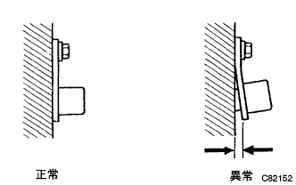
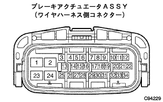
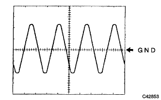

DTC C0200/31 スピードセンサFR系統異常 |
DTC C0205/32 スピードセンサFL系統異常 |
| DTCNo. | DTC検出条件 | DTC出力関連項目 |
|---|---|---|
| C0200/31 C0205/32 |
|
|
| 手順1 | TaSCAN-ECUデータモニター点検 |
参照）SST（TaSCAN）を使用して、異常コードに該当する車輪速センサの出力値を点検する。
|
| ||||
| NG | |
| 手順2 | スピードセンサ取り付け状態点検 |
|  |
スピードセンサの取り付け状態を点検する。
|
| ||||
| OK | |
| 手順3 | スピードセンサ単体点検 |
スピードセンサのコネクタのかん合にゆるみ、抜けなどの不具合がないことを点検する。
スピードセンサのコネクタを切り離す。
コネクタのケースおよび端子に変形、腐蝕がないことを点検する。
SST（トヨタエレクトリカルテスター）を使用して、コネクタ端子間の抵抗値を点検する。
SST（トヨタエレクトリカルテスター）を使用して、コネクタ端子とボデーアース間の抵抗を点検する。
| A | OK |
| B | NG（スピードセンサFR RH） |
| C | NG（スピードセンサFR LH） |
|
| ||||
|
| ||||
| A | |
| 手順4 | ワイヤハーネスおよびコネクター点検 |
スピードセンサのコネクターが接続していることを確認する。
ブレーキアクチユエータASSYのコネクターのかん合に不具合がないことを点検する。
IGスイッチOFFでブレーキアクチユエータASSYのコネクターを切り離す。
コネクターのケースおよび端子に変形、腐蝕がないことを点検する。
|  |
SST（トヨタエレクトリカルテスター）を使用して、ブレーキアクチユエータワイヤ端子間の抵抗およびボデーアースとの絶縁を点検する。
| 点検端子 | 抵抗値 |
|---|---|
| 31（FR+）←→30（FR-） 9（FＬ+）←→8（FＬ-） | 1.6±0.2kΩ（20°C時） 参考値：0.6-2.5kΩ（-40-120°C時） |
| 点検端子 | 導 通 |
|---|---|
| 31（FR+）、30（FR-）、9（FＬ+）、8（FＬ-）←→ボデーアース | 導通なし |
|
| ||||
| OK | |
| 手順5 | スピードセンサ出力波形点検 |
オシロスコープを使用して、ブレーキアクチユエータワイヤの31（ＦＲ+）←→30（ＦＲ-）端子間、9（ＦＬ+）←→8（ＦＬ-）端子間の波形を点検する。
|  |
オシロスコープ波形
|
| ||||
| OK | |
| 手順6 | TaSACN-ECUデータモニター点検 |
参照）SST（TaSCAN）を使用して、異常コードに該当する車輪速センサの出力値を点検する。
|
| ||||
| OK | ||
| ||
| 手順7 | テストモード点検（スピードセンサ系統） |
テストモード点検を行い、センサチェックコードおよびダイアグノーシスコードを確認する。（要領は参照）
|
| ||||
| OK | |
| 手順8 | スピードセンサ出力波形点検 |
オシロスコープを使用して、ブレーキアクチユエータワイヤの31（FR+）←→30（FR-）端子間、9（FL+）←→8（FL-）端子間の波形を点検する。
オシロスコープ波形
|
| ||||
| OK | ||
| ||